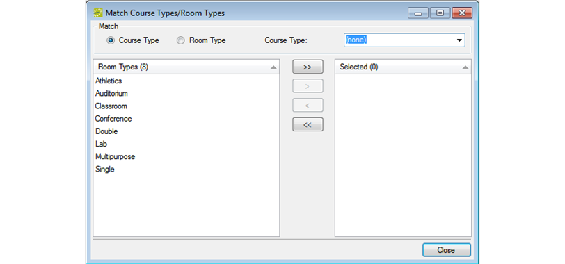

Configure Course Types/Room Types Matches
When you configure course types/room types matches, you are indicating what room types best match particular course types. For example, a laboratory room type is appropriate for a laboratory class, but not for a general lecture class. Configuring these matches helps optimize room and course setup in EMS Academic Planning. When you configure course type/room type matches, you can approach it from either end—that is, you can select a specific course type and then select the room types that best match it, or you can select a specific room type and then select the course types best match it.
Configuring Course Types/Room Types Matches
- On the EMS Academic Planning menu bar, click Academic Planning > Configuration > Match Course Types/Rooms Types. The Match Course Types/Room Types dialog box opens. By default, Course Type is selected and all the active room types that are currently configured in your EMS database are displayed in the Room Type list.

- Do one of the following:
- To match a course type to one or more room types:
- Select the course type on the Course Type drop-down list.
- On the Room Types list, select the room type, or CTRL-click to select the multiple rooms types that are appropriate for the selected course type.
- Click the Move (>) button to move the selected room types to the Selected list. For example, if you select Discussion/Recitation for the Course Type, then appropriate room types could be Classroom or Conference Room.
- To match a room type to one or more course types:
- Click Room Type, and on the Room Type drop-down list, select the room type.
- On the Course Types list, select the course type, or CTRL-click to select the multiple course types that are appropriate for the selected room type.
- Click the Move (>) button to move the selected course types to the Selected list. For example, if you select Classroom as the room type, then appropriate course types could be Discussion/Recitation, Lecture, or Independent Study.
- Click Close.